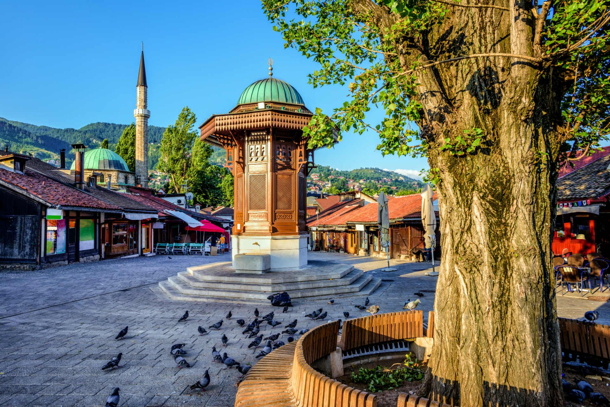
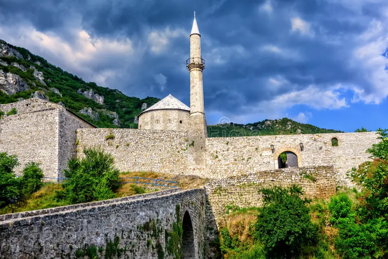
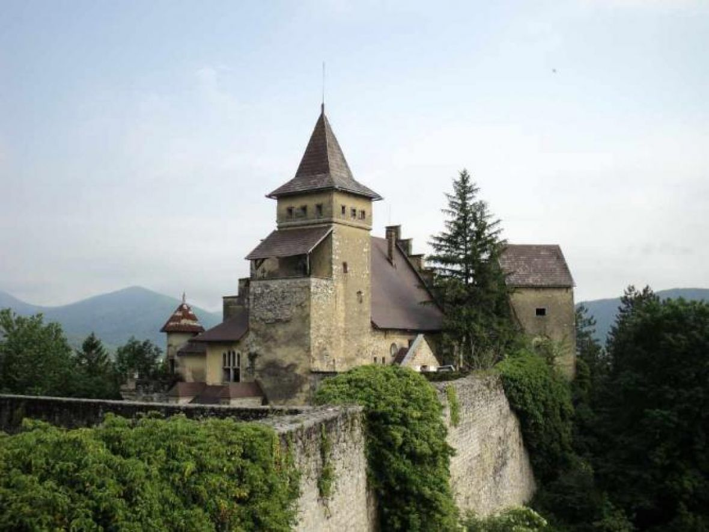

Sarajevo
Sarajevo, glavni grad BiH, bogat historijom i kulturom. Poznato po Baščaršiji i autentičnoj bosanskoj kuhinji kuhinji.
Mostar
Mostar je grad prepoznatljiv po Starom mostu, simbolu povezanosti. Njegove uske ulice odišu historijom i šarmom.

Travnik
Travnik je grad bogate historije i kulture Poznat je i po čuvenim travničkim ćevapima i Starom gradu.
Trebinje
Trebinje je hercegovački grad uz rijeku Trebišnjicu. Oduševljava mirnom atmosferom i mediteranskim ugođajem.
Banja Luka
Banja Luka je grad zelenila, rijeke Vrbas i bogatog kulturnog života. Poznata je po tvrđavi Kastel i ukusnoj banjalučkoj hrani.

Bihać
Bihać je grad na rijeci Uni, poznat po prirodnim ljepotama i vodopadima. Idealna destinacija za ljubitelje avanture i prirode.
Jajce
Jajce je grad kraljeva, sa čuvenim vodopadom u centru grada.Ovdje se spajaju historija i prirodne ljepote.

Konjic
Konjic je grad na obali Neretve, poznat po starom kamenom mostu. Okružen planinama, nudi savršenu oazu za odmor.
Prokoško jezero
Prokoško jezero je planinski biser na Vranici. Okruženo je netaknutom prirodom i tradicionalnim kolibama.

Boračko jezero
Boračko jezero je smaragdni dragulj podno Prenja. Idealan je izbor za kampovanje i vodene aktivnosti.

Ramsko jezero
Ramsko jezero fascinira svojim ostrvima i plavetnilom. Njegovi pejzaži su raj za ljubitelje fotografije.

Jablaničko jezero
Jablaničko jezero poznato je po svojoj površini i prelijepim zalascima sunca. Popularno je odredište za ribolov i odmor.
Vodopad Kravica
Vodopadi Kravica su prirodni dragulj Hercegovine. Idealni su za osvježenje i opuštanje uz zvuke vode.
Vodopad Štrbački buk
Štrbački buk je vodopad na rijeci Uni, smješten u Np Una. Oduševljava svojom snagom i netaknutom prirodom.

Vodopad Skakavac
Vodopad Skakavac, visok 98 metara, smješten je blizu Sarajeva. Omiljeno je izletište za ljubitelje prirode i planinarenja.
Vodopad Bliha
Vodopad Bliha blizu Sanskog Mosta visok je 56 metara. Njegova divlja ljepota oduševljava svakog posjetioca.
Planina Vlašić
Vlašić je poznat po čistom zraku i zimskim sportovima. Popularna je destinacija za odmor u svako doba godine.

Planina Prenj
Prenj, hercegovački Himalaji, oduševljava svojim impozantnim vrhovima. Raj je za iskusne planinare i ljubitelje divlje prirode.
Planina Maglić
Maglić je najviša planina u Bosni i Hercegovini. Smještena u srcu Np Sutjeska, nudi spektakularne poglede.
Planina Treskavica
Treskavica je poznata po brojnim jezerima i bogatoj flori. Njeni izazovni vrhovi privlače ljubitelje planinarenja.

Stari grad Ostrožac
Stari grad Ostrožac smješten je iznad rijeke Une. Njegovi zidovi pričaju priče o bogatoj historiji i kulturi ovog kraja.
Stari grad Počitelj
Počitelj je gradić poznat po kamenim kućama i utvrdi. Njegova autentična arhitektura privlači posjetitelje iz cijelog svijeta.
Stari grad Bobovac
Bobovac je nekadašnja kraljevska rezidencija bosanskih vladara. Smješten na brdu, pruža fascinantan uvid u srednjovjekovnu historiju.
Stari grad Tešanj
Stari grad Tešanj jedna je od najvećih i najočuvanijih tvrđava. Njegova historija seže duboko u prošlost i odiše bogatim naslijeđem.